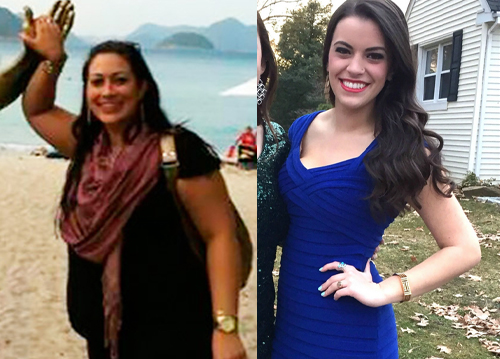
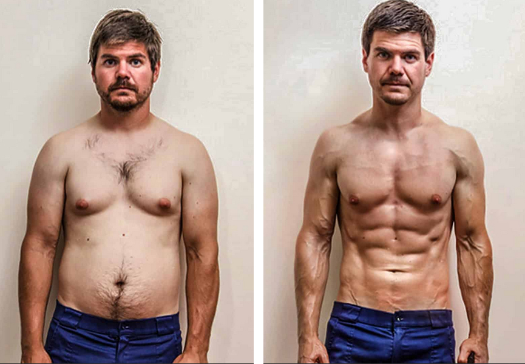
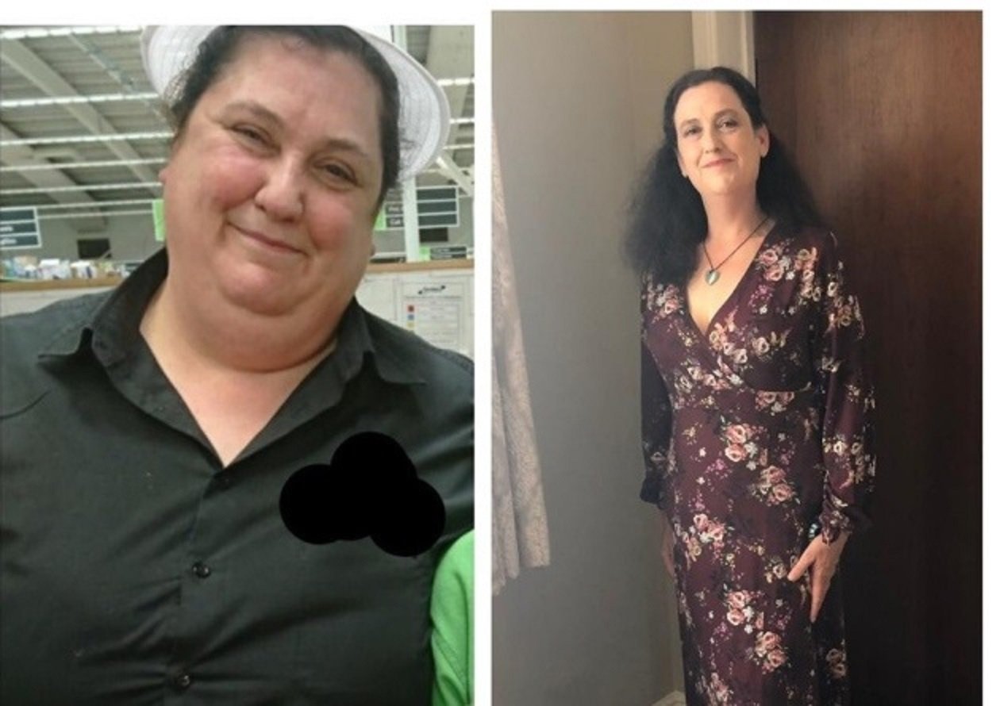
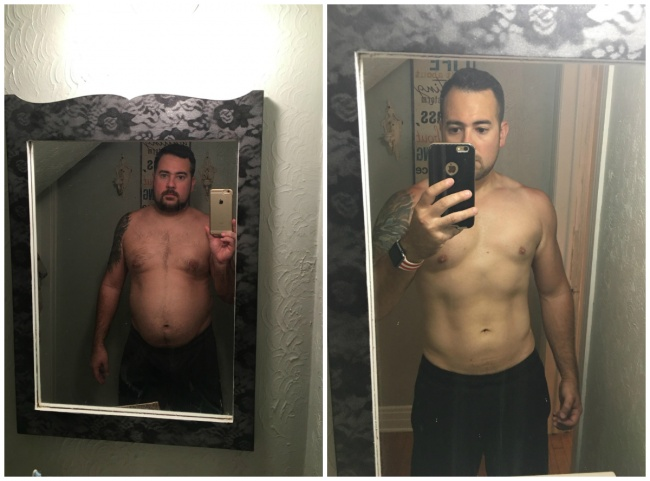
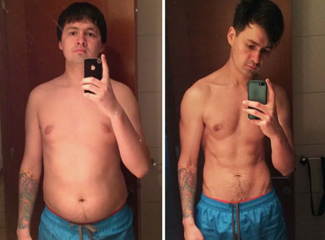
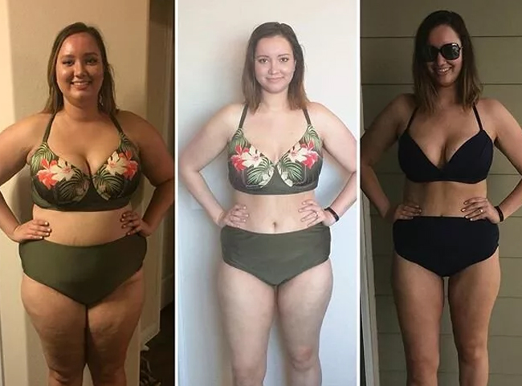
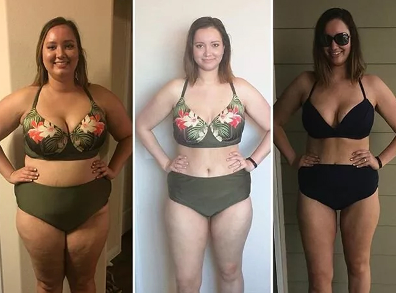

Secondo l'OMS, oltre il 50% delle donne e degli uomini dai 35 ai 50 anni in Italia soffre di sovrappeso, e questo è uno su due di questa cifra è solo in crescita. Entro il 2025, l'OMS prevede un aumento fino al 65%. I nutrizionisti hanno dato un quadro di un italiano medio che è in sovrappeso, di solito le persone che vivono in città che mangiano cibi grassi, bevono alcolici o fumano si muovono poco e trascurano lo sport. Le persone in sovrappeso hanno maggiori probabilità di avere diabete, ictus, infarto e cancro. L'obesità colpisce tutto il corpo nel suo insieme, sia esternamente che internamente. Il grasso bianco viscerale distrugge il corpo dall'interno, avvolgendo e "mangiando" gli organi interni. Il cuore, i vasi sanguigni, i polmoni, i reni, le articolazioni sono le principali vittime dell'obesità, ma non le uniche. L'obesità non è una questione di bellezza, è una questione di salute. E molto serio.
Dr. Michael Osterholm, epidemiologo, professore, direttore del Center for Research dell'Università del
Minnesota.
Ho studiato a lungo il problema dell'obesità in Italia. L'OMS ha citato statistiche terrificanti, ogni
secondo italiano è in sovrappeso! Nella natura degli italiani e mangiare bene , bere e ripeterlo ancora.
Dottoressa Maria Esposito
medico nutrizionista, psicologo, dottorato di ricerca in Scienze Mediche
Nel problema dell'eccesso di peso, si deve tener conto non solo degli indicatori fisici, ma anche di quelli psicologici. Se un paziente può riunirsi e rifiutarsi di mangiare cibo spazzatura, praticare sport e iniziare a mangiare bene, un altro paziente, e la maggior parte di loro, non sarà in grado di farlo. Ogni persona è individuale e ogni singolo problema di obesità è anche individuale. Se un paziente ingrassa a causa di uno stile di vita sedentario e mangia perché è annoiato, un altro paziente afferra i suoi problemi o lo stress con cibo delizioso. Per un altro paziente, il cibo delizioso è una ricompensa, quindi una persona si gratifica, ad esempio, per una dura giornata di lavoro o per un esame. Prima di iniziare a perdere peso, è necessario l'aiuto di un nutrizionista e un psicologo, in modo che lo specialista aiuti a capire quale sia esattamente il problema e come iniziare a perdere peso. Durante il mio lavoro, mi sono imbattuta in un migliaio di casi in cui il paziente aveva bisogno di un ulteriore incentivo per perdere peso, o un vivido esempio che avrebbe potuto seguire. Keto Light, che ora è popolare negli Stati Uniti, è anche molto efficace, brucia con successo il grasso viscerale pericoloso, diminuisce l'appetito, dà energia a una persona per fare qualcosa di interessante e aiuta a distrarre dai pensieri sul cibo. È Keto Light che io e i miei colleghi raccomandiamo ai pazienti che non possono perdere peso da soli.
Martina Romano, 37 anni, risultato dopo 2 mesi di assunzione di Keto Light
Sono molto grata alla Dott Ssa. Esposito per avermi trattata, è stata molto comprensiva col mio problema di sovrappeso. E quando mi è stato chiesto di raccontare la mia storia, ovviamente ho accettato, perché ora capisco quanto sia importante per tutti coloro che leggono questo articolo rendersi conto che può perdere peso. È reale. Non ero sempre stata piena, da studente facevo anche parte della squadra di cheerleader, praticavo sport e conducevo uno stile di vita attivo. Ma poi mi sono sposata, ho dato alla luce due bambini e non avevo più tempo per occuparmi di me stessa. Dopo la seconda gravidanza, mi sono resa conto che non avrei mai avuto la pancia piatta come prima. Stavo ingrassando, ma non potevo farci niente. La famiglia occupava tutto il mio tempo e l'attenzione, mi sono lanciata andare e a un certo punto ho capito che io non mi guardo allo specchio. Non volevo guardarmi, ma quando ha dovuto, non ho potuto trattenere le lacrime. Odiavo il mio corpo. È stato brutto, pieghe, una pancia molle, la cellulite e la pelle flaccida. Ho iniziato a indossare vestiti larghi e neri, per nascondere il corpo. Ha smesso di farmi i capelli e il trucco, come amavo prima. E naturalmente sono iniziati i problemi con mio marito Antonio, in un primo momento ha smesso di dimostrare l'amore e tenerezza, e poi si è allontanato, si fermava dopo il lavoro per incontrarsi con i tuoi amici. Allora ho capito che era il mio eccesso di peso. Perché mi facevo schifo da sola, come posso essere desiderabile? Ma il picco è accaduto, quando eravamo con Antonio a una cena in un ristorante e abbiamo incontrato il nostro comune amico di università, non mi ha riconosciuta e mi ha detto che ha pensato che fossi la mamma di Antonio. Antonio era arrossato dalla rabbia e ha detto che sono sua moglie Martina. Mi sentivo terribilmente a disagio, mi sentivo come una brutta bestia, che sembra 20 anni più vecchia! Perché la mamma di Antonio ha 55 anni... Sono corsa in bagno, per non mettermi a piangere davanti a tutti nel ristorante. In bagno mi sono trovata davanti allo specchio, fissando su di me e non potevo riconoscere quella ragazza, che ero una volta! Divertente, allegra, spettacolare e sportiva. È quella di cui erano innamorati tutti. Ora in uno specchio riflette una donna di mezza età, gonfia sul viso, con il doppio mento e una pancia enorme, che non riusciva a nascondere neanche sotto larghi t-shirt. Ho capito che ho bisogno di perdere peso con urgenza, altrimenti potevo impazzire. Ho iniziato a fare una dieta, o meglio ho provato.
Così come cucinavo per tutta la famiglia era molto difficile resistere alla fine, per non provare quello che devi cucinare. Quindi mi mangiavo un paio di panini, lo stufato, la pasta con formaggio e burro per la cena... E non potevo rifiutarmi di bere i succhi di frutta, bibite, vino... Così andò avanti per circa tre mesi, il risultato è stato zero. Sono anche ingrassata di 3 chili. Mi rimproveravo costantemente per ogni caloria consumata, per la mia debolezza, mi rimproveravo per il mio aspetto e per il fatto che non riuscirò mai a ottenere nulla. Ero disperata, ero sull'orlo di una crisi di nervi. E ho deciso di fare un intervento chirurgico di riduzione dello stomaco, così sono andata dalla dottoressa Esposito.
Mi ha ascoltata e mi ha detto che posso perdere peso senza chirurgia e ottenere lo stesso risultato, e mi raccomando di non andare sotto i ferri. Mi importava, perché mi ricordava l'esperienza di auto-perdita di peso. Lei era in gamba, mi ha prescritto un trattamento con la polvere Keto Light e mi ha detto che se non comincio a perdere peso allora lei mi darà l'autorizzazione per l'operazione. Ero scettica e la prima settimana di assunzione di Keto Light non sono nemmeno salita sulla bilancia e non ho controllato i risultati. Ma ho notato che i jeans mi stavano scivolando! Sono rimasta sorpresa e ho deciso di pesarmi, il risultato era meno 5 kg! E questo è in una settimana! E non ho fatto nulla per questo! Conducevo lo stesso stile di vita, mangiavo quanto volevo e mi concedo l'alcol. Ma lo stesso ho perso peso! Poi ho iniziato a prendere peso sul serio, ho visto il risultato e mi è piaciuto mantenere e perdere peso ancora di più. Ho praticamente abbandonato le bevande dolci, bevo più acqua, cammino con i bambini la sera nel parco vicino casa. Prima, semplicemente non avevo la forza, e ora mi sento come se fossi stata piena di energia! Volevo uscire!
La Dott Ssa Esposito vedendo i miei risultati mi ha abbracciata e mi ha detto di essere orgogliosa che ho perso peso da sola senza fare interventi chirurgici pericolosi. In 2 mesi di assunzione di Keto Light, ho perso 24 chili.
 Ora guardandomi allo specchio vedo proprio me stessa. Quella Martina, che ero sempre stata! Ho cominciato a indossare bei vestiti, mi piace come sto in bianco! Sperimentando con i capelli, ora penso che mi piaccio di più con i capelli chiari. Antonio mi guarda con ammirazione, come prima alle superiori. Quando mi guarda in questo modo, ricordo il primo giorno in cui l'ho conosciuto. Questo è stato dopo la partita della nostra nazionale, io ero allo stadio e dopo la performance mi vide e rimase immobile. Era terribilmente timido, anche se era molto popolare tra le ragazze. Antonio mi ha chiesto di sposarlo una seconda volta, ha detto, che si è innamorato di me con una forza nuova e vuole dimostrare il suo amore. Mi porta letteralmente tra le braccia e io non lo intralcio. So cosa vuol dire essere in sovrappeso e non sapere come liberarsene. Cercando di perdere peso, ma fallire ogni volta. Disperare e iniziare a incolpare se stessi. Smettere di amarsi e persino odiarsi. So cosa vuol dire. E so che abbiamo bisogno di aiuto. È questo l'aiuto che per me sono diventata la polvere Keto Light. Ne ho passate tante e posso dire con certezza che questa polvere sono la cosa migliore che mi sia successa negli ultimi anni. Sono molto grata alla dott ssa Esposito per non avermi permesso di fare l'intervento chirurgico pericoloso e mi ha consigliato questa polvere. Grazie! Ora sono cosi come mi sento dentro. Sono bella e lo so.
Dr. Pier Luca Rossi,
endocrinologo, nutrizionista, dottore in scienze mediche
Seguo da tanto la ricerca dietetica canadese e so che questa polvere Keto Light sono un meraviglioso prodotto naturale progettato per soddisfare tutte le esigenze del corpo. Perdere peso non è mai stato così facile. Questo prodotto dovrebbero essere assunto quotidianamente, senza paura per la salute. Grazie a Keto Light, brucerai fino a 5 kg a settimana in modo completamente naturale. Questo è un prodotto completamente naturale, adatto a tutti, indipendentemente da sesso, età e peso. La perdita di peso si ottiene bruciando grassi e non a causa di disidratazione o perdita di massa muscolare. Questo è un prodotto unico che aiuterà a bruciare il grasso viscerale pericoloso e a normalizzare tutte le funzioni del corpo. La polvere Keto Light ha da tempo guadagnato popolarità nel Occidente e stanno guadagnando popolarità in Italia. Personalmente, consiglio questo prodotto a tutti i miei pazienti e tutti mi ringraziano per essere in grado di ottenere un corpo sano e magro.
Keto Light è un complesso naturale al 100% che combatte con successo il grasso viscerale pericoloso e normalizza tutti i processi nel corpo umano. Ciò che contribuisce a una sana perdita di peso. È stato clinicamente dimostrato che Keto Light accelera il metabolismo, ripristina l'attività del sistema endocrino, aumenta l'immunità, stimola la rigenerazione dei tessuti e sopprime la fame.
Keto Light contiene tutti gli oligoelementi necessari che contribuiscono a un'intensa combustione dei grassi anche nelle aree più problematiche. Il tasso di bruciare i grassi aumenta di 10 volte!
Questo strumento non solo riduce efficacemente il peso, ma guarisce e ringiovanisce il corpo dall'interno.
Le caratteristiche principali di Keto Light:
Andrea Morelli, 45 anni, risultato dopo 28 giorni di assunzione di Keto Light
Keto Light mi è stato consigliato dall'allenatore in palestra dove vado. Vide come soffrivo giorno dopo giorno, cercando di perdere peso e aumentare la muscolatura, ma non riuscivo. La pancia grossa non andava via e non sembra nemmeno andare. Non sono stato un ragazzo magro, ma con l'età il mio metabolismo è completamente rallentato. Se prima potevo mangiare pollo fritto ogni giorno e bere birra fredda, ora da cibi grassi ho problemi di stomaco e gastrite. Ecco perché ho iniziato a prendere Keto Light, perché in primo luogo è un prodotto naturale, senza sostanze chimiche dannose, e in secondo luogo, dà un risultato comprovato senza danni alla salute. Nella nostra palestra, quasi tutti prendono questo strumento e tutti sono felici. Dicono che il corpo in generale migliora. Perché oltre a perdere peso, Keto Light reintegra anche il fabbisogno quotidiano di minerali e vitamine. In una parola - Solo Pro. E gli uomini sono ancora meglio perché puoi costruire muscoli senza l’essiccazione e senza astinenza nel cibo. Durante il mese di assunzione, ho perso 6 kg, ho aumentato i muscoli e ho migliorato la qualità del corpo, eliminando il grasso. Grazie all'allenatore per aver condiviso un modo collaudato per perdere peso. Ora consiglio Keto Light a chiunque sia in sovrappeso.
Silvia Bernardi, 63 anni, risultato dopo 5 mesi di assunzione di Keto Light
La polvere Keto Light sono diventate una vera salvezza per me. Ho iniziato ad avere seri problemi di salute con l'età ed ero costantemente malata. I medici hanno attribuito tutto alla mia età e peso in eccesso. Con un altezza di 1,65, pesavo 113 chilogrammi. Le mie gambe non potevano sopportare questo peso, avevo problemi terribili alle articolazioni e vasi sanguigni. Oh, e dove non ho avuto problemi. Andavo in ospedale come al lavoro, ho dimenticato cos'è una vita spensierata. Non potevo nemmeno giocare con i miei nipoti, aiutare mia figlia ... Mi è stato consigliato da una nutrizionista di prendere la polvere Keto Light mi ha detto che alla mia età sarebbe stato molto difficile perdere peso da sola e che era necessario un aiuto urgente. Ho creduto al dottore e ho ordinato la polvere sul sito ufficiale del produttore, è stato tanto tempo fa e ho potuto ordinare solo con l'aiuto del nipote che poteva andare sul sito americano. Ho iniziato a perdere peso immediatamente, dopo una settimana di assunzione, ho già notato il risultato. E dopo un mese è diventato più facile per me camminare e respirare. Poi ho perso 12 chilogrammi. Ora il mio peso è di 77 chilogrammi e mi sento benissimo. La mia dieta non è cambiata, il problema non era nella dieta, ma nel fatto che il corpo ha semplicemente smesso di assorbire cose utili e ha iniziato ad accumulare grasso. E la polvere accelera la digestione e brucia grassi pericolosi. Mille grazie al mio medico per avermi prescritto questa polvere. Senza di loro, non avrei sicuramente perso peso.
Keto Light in Italia può essere acquistato solo sul sito ufficiale sito del produttore
Commenti:
Wow! La storia di Martina mi ha commosso. È così vitale e triste. Grazie per aver condiviso questa storia, si può fare un film con la tua storia! Ho iniziato ad avere problemi con il metabolismo con l'età, certamente non ho partorito, ma ho una pancia enorme dalla birra. Avevo letto di questa polvere, che prendono tutte le star di Hollywood per perdere rapidamente peso per il ruolo. Ho letto di questa polvere su un trainer a una stella su Twitter e ho deciso di provarle. Il risultato è meno 23 kg. Mi sento benissimo Fu come se iniziassi a vivere una vita diversa, più riuscita e piena di eventi di quella che avevo quando ero un uomo grasso.
Non ho fatto nessuna dieta! Ho solo diminuito gli carboidrati e ho iniziato a mangiare più verdure. Ma con questa polvere, ho quasi perso l'appetito e non volevo affatto i dolci. Sicuramente, lo raccomando!

A proposito del fatto che è impossibile bruciare il grasso e aumentare la massa muscolare! Si'! Sono sempre in palestra e il risultato è zero. La pancia non va via, tranne che sono diventato più voluminoso nelle spalle. Devo provare questa polvere.
Ho grossi problemi di salute a causa del sovrappeso. Ho consultato il medico su questa polvere e la prossima settimana inizierò a prenderle. Augurami buona fortuna!

Ho bevuto il prodotto per 2 settimane e finora -8 kg. Tutto sembra funzionare.
Stefano con il prodotto Keto Light il processo di aumento della massa muscolare sarà più veloce e più sicuro per il corpo. Il prodotto aiuta anche a bruciare il grasso viscerale sulla pancia, che non va via dallo sforzo fisico.
Cordiali saluti, Dr. Pier Luca Rossi
Beviamo il prodotto Keto Light insieme a mio marito! E nemmeno a causa del fatto che dobbiamo perdere peso, ma perché questa polvere ha una composizione naturale meravigliosa, e in una porzione delle polvere contiene il bisogno quotidiano di una persona per tutto ciò che è utile. Il prodotto ha fatto un ottimo lavoro con il mio grasso dopo la seconda gravidanza e con il grasso di mio marito, che è ingrassato per colpa mia, cucino sempre quando stiamo a casa.
Mia moglie ha comprato qquesta polvere con un suggerimento che è tempo di prendersi cura di me stessa. Penso che dobbiamo davvero fare qualcosa. Questo prodotto sicuramente non peggiorerà. L'articolo mi ha ispirato, grazie.
Ho perso 5 kg in una settimana e mezza. Non mi aspettavo un simile risultato! E le forze sono diventate davvero di più! Voglio prendermi cura di me stesso, iniziare a fare qualcosa e non solo sdraiarmi sul divano dopo il lavoro. Figo! Cominciò a sentirmi meglio.

Povera Martina! Ha dato alla luce due bambini e suo marito era ancora insoddisfatto del suo corpo! Lascia che gli uomini provino a partorire e non ingrassino durante la gravidanza, e li diremmo per aver mangiato troppo!
Il mio ragazzo ha perso peso grazie a questa polvere e dirò che ho iniziato ad amarlo ancora di più. Certo, sembra terribile, ma senza una pancia appesa mi attira di più =)
È vero che ora al farmaco si applica uno sconto del 50%?
Marisa, sì, ora sul sito ufficiale del produttore Keto Light si può acquistare con uno sconto del 50%.
Cordiali saluti, Dr. Pier Luca Rossi
Perché Keto Light non è venduto in farmacia? Questo è un prodotto molto efficace, perché non posso comprare la polvere nella farmacia più vicina?
Fulvio, perché le farmacie commerciali fanno un enorme margine sul prodotto e il loro costo aumenta più volte. Sul sito Web ufficiale del produttore, puoi acquistare il prodotto originale e sicuro al prezzo più basso, ora con uno sconto del 50%.
Cordiali saluti, Dr. Pier Luca Rossi
Questo prodotto mi ha salvato la vita! I medici hanno detto che ho urgente bisogno di perdere peso o inizieranno complicazioni cardiache. Ho dovuto fare qualcosa con urgenza. E l'unica decisione giusta è stata quella di acquistare la polvere Keto Light. Sto dimagrendo lentamente, ma sicuramente e anche meglio per la mia salute.
 

Mia mamma ha bevuto questa polvere e ora ho un nuovo papà! Incolpo Keto Light =)
Ho davvero perso peso! Grazie a Internet ho conosciuto questa polvere. La pancia è scomparsa in appena una settimana. Ho iniziato a sentirmi leggera e bella) Ho provato molti integratori, ma ho iniziato a perdere peso solo con Keto Light.
Keto Light è sempre a casa nostra! Con l'aiuto di questa polvere, mia madre e la figlia maggiore hanno perso peso, mia figlia incolpava me di averla nutrita così. Quindi, per la nostra famiglia, Keto Light è stata una vera salvezza! E non ho paura per la salute di mia famiglia, perché sono sicura della composizione naturale del prodotto.
Perché è necessario essere magri e belli? Sono alta 1,75 cm, peso 99 kg e mi sento benissimo. Non capisco tutta questa ossessione per la bellezza e l'apparenza.
Valeria, è bello che tu ti senta bene. Ma, il problema dell'obesità è principalmente una questione di salute, non di bellezza. Il grasso bianco viscerale è pericoloso per la salute e ti consiglio di fare dei test e scoprire la percentuale di grasso nel tuo corpo. Se vuoi perdere peso e ridurre la percentuale di grasso corporeo, la polvere Keto Light sono un meraviglioso prodotto naturale che ti aiuterà a riportare il corpo alla normalità, a bruciare i grassi e ad accelerare il metabolismo.
Cordiali saluti, Dr. Pier Luca Rossi
Grazie per il suggerimento. Sì, sono più interessata a quale percentuale di grasso corporeo che ho. Ma ho letto da qualche parte che se il corpo è proporzionale, cioè non c'è un enorme addome, allora tutto è in ordine.
Valeria, è meglio contattare gli specialisti e scoprirlo di sicuro. Non ci vuole molto tempo.
Cordiali saluti, Dr. Pier Luca Rossi
Dottore, mi dica, si possono prendere il prodotto subito dopo il parto? Ho partorito qualche mese fa e ora il mio corpo è in condizioni terribili.
Ornella, il prodotto Keto Light non ha effetti collaterali poiché è un prodotto naturale al 100%, senza additivi chimici. Ma se sei nel periodo dell'allattamento è meglio consultare il tuo medico curante.
Cordiali saluti, Dr. Pier Luca Rossi
Ho perso 15 kg con questa polvere! Sono felice!
Con l'aiuto di questa polvere, il mio amico ha perso peso e ha aumentato la massa muscolare prima del campionato di bodybuilding! Questo è fantastico. Non ha ammesso per molto tempo che prende questa polvere, ma poi ho scoperto il suo segreto. Ora prendo la polvere da solo e finora meno 6 kg. Mi piace tutto
Ottimo prodotto Lo consiglio a tutti.